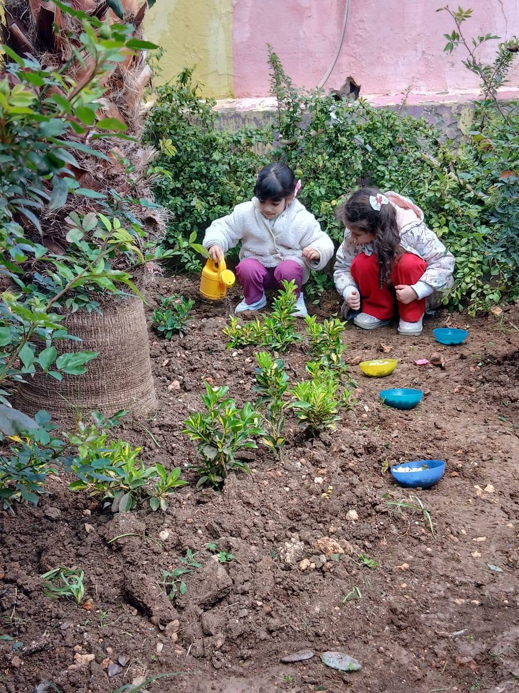
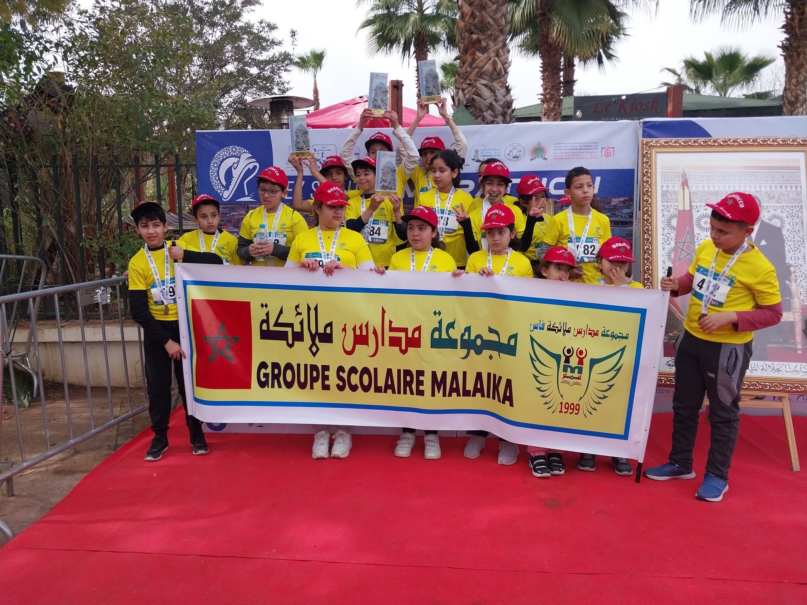
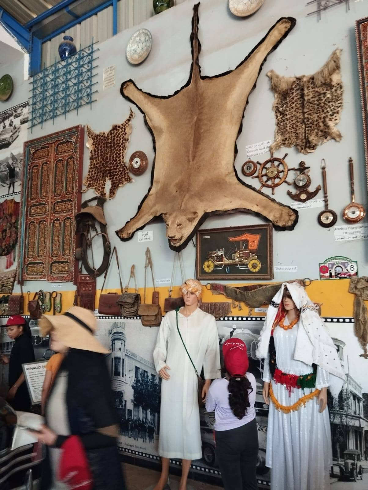
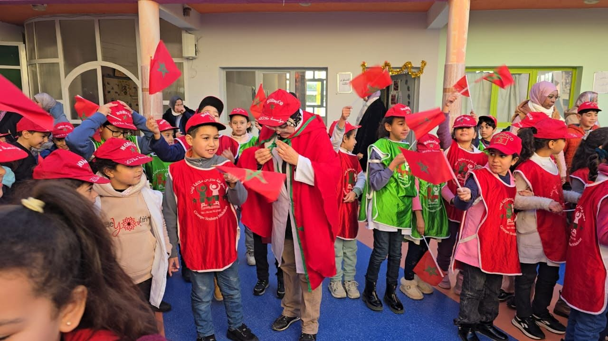

Une école vivante, du matin au soir
Clubs, sport, sorties, célébrations : tout ce qui se passe autour des cours et qui compte tout autant.
Choisir une passion, et s'y tenir
Chaque élève du primaire au lycée s'inscrit à un club en début d'année. Les séances ont lieu sur le temps scolaire, encadrées par un enseignant référent.
Club vert
Semis, plantations, arrosage et compost. Les élèves gèrent le jardin pédagogique et sensibilisent leurs camarades au tri.
Robotique & codage
Initiation à la programmation par blocs au primaire, robots et capteurs au collège, projets libres au lycée.
Club lecture
Un livre par mois, des rencontres avec des auteurs et le prix littéraire interne voté par les élèves.
Théâtre & expression
Travail de la voix, du corps et de la confiance en soi, avec un spectacle présenté en fin d'année.
Journal de l'école
Reportages, interviews et maquette : les élèves publient trois numéros par an, en trois langues.
Club sportif
Athlétisme, football et basket. Nos équipes représentent l'école dans les compétitions régionales.


Le jardin pédagogique
Derrière le bâtiment du primaire, une bande de terre est devenue notre salle de classe la plus vivante. Les élèves y sèment, y arrosent, y observent — et y apprennent la patience.
Le projet mobilise plusieurs disciplines : sciences pour le cycle de la plante, mathématiques pour mesurer et relever la croissance, français et arabe pour tenir le carnet de bord, arts plastiques pour signaler chaque espèce.
- Un carnet d'observation par classe, tenu toute l'année
- Rotation hebdomadaire des équipes d'arrosage
- Compostage des déchets verts de la cantine
- Récolte des aromatiques partagée avec les familles au printemps
Représenter son école, ça se mérite
Nos équipes s'entraînent toute l'année et participent aux rencontres inter‑établissements de la région Fès‑Meknès, ainsi qu'à la course jeunes du Marathon de Fès.
Athlétisme
Entraînement hebdomadaire et sélection pour les courses régionales.
Football & basket
Équipes benjamines, minimes et cadettes, filles et garçons.
Journée sportive annuelle
Toute l'école sur le terrain, familles invitées, en fin d'année scolaire.


Fès comme prolongement de la salle de classe
Chaque niveau effectue au minimum une sortie par trimestre, préparée en classe et suivie d'un travail de restitution.
- Musées et fondouks de la médina : Nejjarine, Batha, Dar Adiyel
- Ateliers d'artisans : tannerie, dinanderie, zellige, tissage
- Galeries d'art et rencontres avec des artistes fésis
- Sorties nature dans le Moyen Atlas pour les cycles 3 et 4
- Visites d'universités et d'entreprises pour les lycéens
Les rendez‑vous de l'année
Fêtes nationales, journées thématiques et spectacles : des moments où toute l'école se retrouve, et où les familles sont conviées.
Fête de l'Indépendance
Cérémonie du drapeau, chants et défilé des classes dans la cour.
Semaine des langues
Concours d'éloquence, dictée géante et exposition en arabe, français et anglais.
Journée de la Terre
Plantations, ateliers de tri et exposition des projets du club vert.
Fête de fin d'année
Spectacles de la maternelle au lycée et remise des prix, familles invitées.

Le quotidien, simplifié
Transport
Circuits couvrant les principaux quartiers de Fès, avec accompagnateur à bord de chaque bus.
Cantine
Menus équilibrés affichés chaque semaine, préparés sur place et adaptés aux plus jeunes.
Infirmerie
Un espace de soins dédié, une fiche santé par élève et un protocole d'urgence connu de tous.
Espace parents
Notes, absences, devoirs et communications de l'établissement, consultables en ligne.
Une journée à Malaika
| Horaire | Maternelle & primaire | Collège & lycée |
|---|---|---|
| 08h00 | Accueil échelonné | Accueil et appel |
| 08h30 – 12h00 | Ateliers et cours du matin | Quatre séances de cours |
| 12h00 – 14h00 | Déjeuner et temps calme | Déjeuner, permanence, clubs |
| 14h00 – 16h30 | Cours de l'après‑midi | Trois séances de cours |
| 16h30 – 18h00 | Garderie et activités | Soutien, clubs, entraînements |
Envie de voir tout cela en images ?
Notre galerie rassemble les moments marquants de la vie de l'école, cycle par cycle.